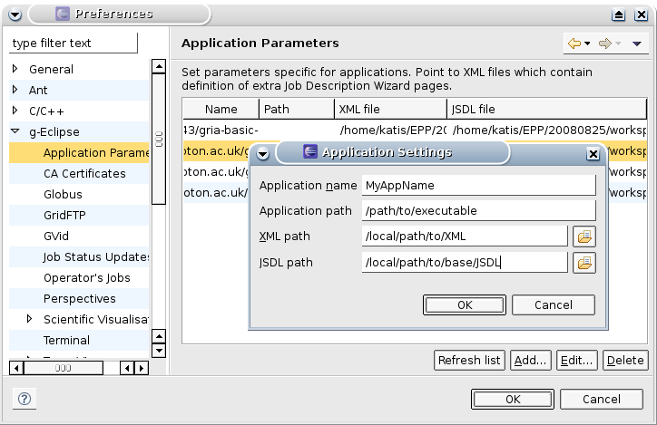

Application Parameters allow user to define extension of New Job Wizard in form of additional wizard's pages without writing even single line of programming code. From user's point of view this is declarative mechanism based on XML files.
If any Application Parameters are defined they will be displayed on Executable page in New Job Wizard in Application name list (by application name parameter). Choosing one of the applications from the list will result in adding new pages to wizard (defined by XML file associated with Application Parameters). If not empty JSDL file is set for Application Parameters it will be used as a base for creating new job description by Wizard.
Application Parameters can be defined using Window > Preferences > g-Eclipse > Application Parameters menu, by providing the following information:
ui_definition.xsd"
schema file located in eu.geclipse.jsdl.ui plug-in in xml
subdirectory.

Any extra wizard's pages should be defined in XML file passed to application
parameters through XML Path field in Preferences dialog. This XML is
described by ui_definition (this file can be found in
eu.geclipse.jsdl.ui/xml/) XSD document.
The basic document structure, listing main XML elements is described below. Please refer to XSD document for detailed information.
pluginPages - XML document root element, within it page
elements are contained
page - each page element defines new wizard's page.
Graphical components of page should be defined inside this element.
Elements components supported by parametric wizard extensions are the
following:
text - defines simple text filed
(org.eclipse.swt.widgets.Text). As a children of this XML element
also label and paramName elements should be created. The
first of them represents org.eclipse.swt.widgets.Label widget that
will precede text component with field description. paramName stands
for JSDL element to which value of this text field will be written.
textWithFileChooser - the same as text element
(including children of it), but has additional
org.eclipse.swt.widgets.Button coming after SWT's text field.
Pressing this button will result in opening
eu.geclipse.ui.dialogs.GridFileDialog. Selection made in this dialog
will be passed to SWT's text field.
list - represents org.eclipse.swt.widgets.Combo widget.
It extends text element, which means that it inherits all his
children elements, but in addition has its own value and
writeable sub-elements. In values elements list content
should be defined. writeable decides whether user will be able to
edit SWT's combo's entries.
multipleArguments - control used to keep multiple values of
one parameter. Values are kept in table
(org.eclipse.swt.widgets.Table) - in which their String values are
presented (because of the LabelProvider used). This table comes in together
with 3 buttons: ``Add'' for adding new value and ``Edit'' and ``Remove''
respectively for editing and deleting selected item. As for all components
also for this one paramName should be defined to associate this
control with JSDL element. Also the range of number of parameter's values
can be determied - using minArgumentsCount and
maxArgumentsCount elements.
textDataStaging - the same as textWithFileChooser, but
for chosen file also the DataStaging element in JSDL will be
created. There is possibility to determine if this file should be staged in
or out onto Grid by giving element file values ``in'' or ``out''
respectively.
multipleDataStaging - this is intended to combine
textDataStaging with multipleArguments, but as for release 1.0 there's no
support for this element.
NOTE: paramName element which must be defined for all of
the components' element is the name of parameter that will be passed to
application. This is done by adding name of the parameter to executable call
of the application. In JSDL those values are represented by
jsdl-posix:Argument elements.